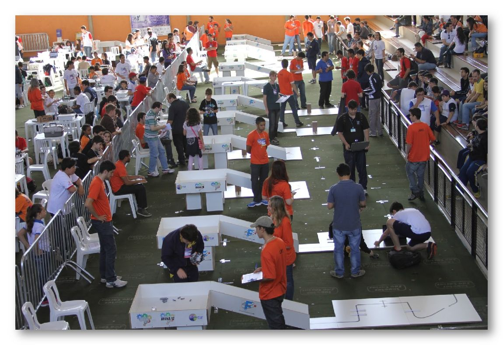
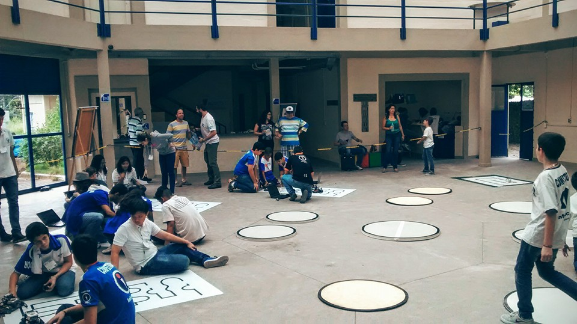
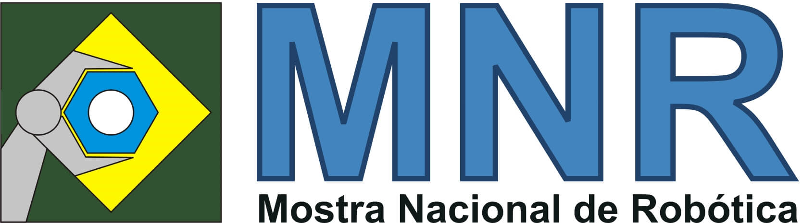

Competição Brasileira de Róbótica

A competição brasileira de robótica (CBR), na foto em sua realização em Fortaleza - CE (2013), é uma das competições referentes a Competição Mundial de Robótica (RoboCup), nela alunos de graduação e pós-graduação se empenham para construir robôs afim de participar das categorias existentes e desenvolver pesquisa nas áreas de robótica e inteligência computacional e artifical, realizada desde 2003, a competição já passou pelas localidades: Bauru - SP, Salvador - BA, São Luis - MA, Campo Grande - MS, Florianópolis - SC, Salvador - BA, Brasília - DF, São Bernardo do Campo - SP, São João del-Rei - MG, Fortaleza - CR, São Carlos - SP e Uberlândia - MG.
O evento abriga as seguintes competições: RoboCup Small Size Soccer (F-180), RoboCup 2D Soccer Simulation, RoboCup 3D Soccer Simulation, RoboCup Humanoid and Standard Plataform League (SPL), RoboCup Rescue Simulation Agents, RoboCup @Home, RoboCup Junior, RoboCup Festo Logistics, IEEE Standard Educational Kits (SEK), IEEE Open, IEEE Very Small Size Soccer (VSS) e IEEE Humanoid Robot Racing. Site oficial.
Competição Latino-Americana de Robótica

A competição latino-americana de robótica (LARC), na foto em sua realização em São Carlos - SP (2014), é uma das competições referentes a Competição Mundial de Robótica (RoboCup), nela alunos de graduação e pós-graduação se empenham para construir robôs afim de participar das categorias existentes e desenvolver pesquisa nas áreas de robótica e inteligência computacional e artifical, realizada desde 2003, a competição já passou por diversos paises como: Brasil, Peru e Uruguai.
O evento abriga as seguintes competições: RoboCup Small Size Soccer (F-180), RoboCup 2D Soccer Simulation, RoboCup 3D Soccer Simulation, RoboCup Humanoid and Standard Plataform League (SPL), RoboCup Rescue Simulation Agents, RoboCup @Home, RoboCup Junior, RoboCup Festo Logistics, IEEE Standard Educational Kits (SEK), IEEE Open, IEEE Very Small Size Soccer (VSS) e IEEE Humanoid Robot Racing. Site oficial.
Olimpíada Brasileira de Robótica

A olimpíada brasileira de Robótica (OBR), na foto em sua realização em São Carlos - SP (2015), é uma competição onde alunos de ensino fundamental e médio trabalham na construção de robôs de resgate, a competição é baseada na categoria RoboCup Jr., os robôs devem ser capazes de seguir uma fita preta que representa um caminho até uma vítima, o caminho possui quebramolas, passagens sem a fita, obstáculos, curvas obrigatórias e outras dificuldades. Site oficial.
Torneio Juvenil de Robótica

O torneiro juvenil de robótica (TRJ), na foto em sua realização em Petrópolis - RJ (2015), é uma competição onde alunos de ensino fundamental e médio trabalham na construção de robôs de resgate e robôs de sumô.
Mostra Nacional de Robótica

A mostra nacional de robótica (MNR) é a maior mostra científica de trabalhos de robótica do país com objetivo de expor e divulgar trabalhos na área de robótica. Site oficial.